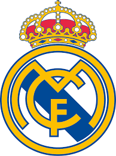

Alguns Dos Maiores Times De Cada Continente
Europa

Real Madrid

Barcelona
Bayern de Munique

AC Milan

Inter de Milão

Juventus

Liverpool

Manchester United

Chelsea

Arsenal

Manchester City

Paris Saint-Germain

Borussia Dortmund

Atlético de Madrid

Tottenham

Benfica
Ajax
Galatasaray
Club Brugge

Celtic
América do Sul

Santos

São Paulo
Palmeiras

Flamengo

Grêmio

Corinthians

Cruzeiro

Internacional

Atlético Mineiro

Fluminense

Boca Juniors

River Plate

Independiente

Racing

Peñarol

Nacional

Olimpia

Atlético Nacional

Colo-Colo
Independiente del Valle
África

Al Ahly

Zamalek

Kaizer Chiefs

Orlando Pirates

Wydad Casablanca

FAR Rabat

Espérance

JS Kabylie

ASEC Mimosas

Asante Kotoko
Ásia

Al Hilal

Al Ittihad

Urawa Red Diamonds

Yokohama F. Marinos

Jeonbuk Hyundai

FC Seoul

Guangzhou Evergrande

Shanghai SIPG
Persepolis
Esteghlal
América do Norte, Central e Caribe

Club América

Cruz Azul
Guadalajara
Monterrey
Tigres UANL

LA Galaxy

DC United
Inter Miami